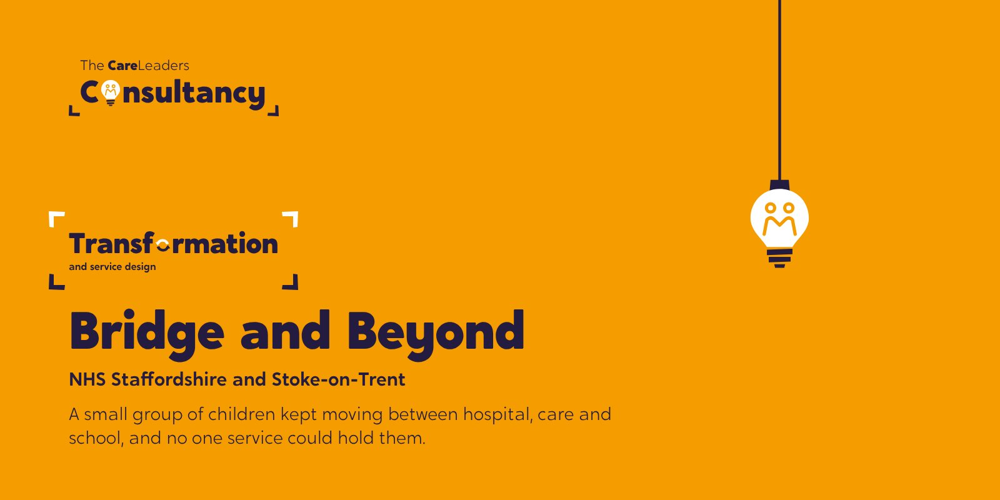
The starting point
Some children in Staffordshire and Stoke-on-Trent were caught in the gap between children’s social care and Tier 4 mental health placements. They were described as having “complex needs”, placed far from home in some of the most expensive placements either council paid for, and passed between services that each held part of the picture. The NHS trust, both councils and the ICB wanted one pathway built around the child, and a workforce that saw the same child in the same way.
What we heard
We started with more than 30 one-to-one conversations with senior leaders, then brought over 100 professionals together in three system-wide workshops. The pattern was clear: the children weren’t the problem. The systems around them were built for single agencies, and the language used about the children made them harder to help.
“The training helped me understand that children themselves aren’t complex, it’s the systems they’re placed in that create challenges.”
What we did
- Stage 1Listening30+ conversations with senior leaders and three workshops with 100+ professionals
- Stage 2DesigningA business case and detailed plan for a new multidisciplinary pathway, tested against real local cases before it went to decision
- Stage 3TrainingFour cross-sector sessions reaching more than 400 staff
- Stage 4ReframingThe programme stopped talking about “complex needs” and started talking about “behaviours of distress”
How we worked
Story
Every training session opened with lived experience of care, so staff heard what being moved between services feels like from the child’s side.
Theory
The evidence on trauma and distress behind the new language.
Tools
Joint problem-solving that staff from health, care and education could use together the next day.
What changed
£4 million for a service built around the child.
Bridge and Beyond now holds the children who used to fall between hospital, care and school.
The business case secured £4 million, and Bridge and Beyond launched as a new service for young people in the gap between children’s social care and Tier 4 placements. Of the 119 people who gave feedback on the training, 72% rated it excellent and 22% good, and 97% said it met its objectives.
The first phase was backed by £250,000 from the West Midlands CAMHS Provider Collaborative. The partners also recruited a participation lead, so young people’s voices now shape how the service works.
“This training has transformed the way I approach children in distress.”
One NHS clinician said the sessions were the first time in their career they had felt properly heard by social care colleagues. A senior social worker described how a joint problem-solving session stopped a placement breaking down that once would have seemed certain to.
What Staffordshire runs now
Bridge and Beyond is now run by North Staffordshire Combined Healthcare NHS Trust, working with both councils and the ICB.
See the work
Open any piece to look through it page by page.
Entry to exit
The draft pathway, stage by stage. Choose a stage.
The draft pathway
Anyone can refer, including families, but they say why existing pathways haven’t worked. A multi-agency team screens for urgency.
A relational assessment of what is driving the distress, the family’s strengths, and what the lead professional needs.
Three tiers: signposting and consultation, more intensive home-based support, and direct support from the multidisciplinary team.
Clear outcomes, a transition plan, and follow-ups at 3, 6 and 12 months so no one falls back through the gap.
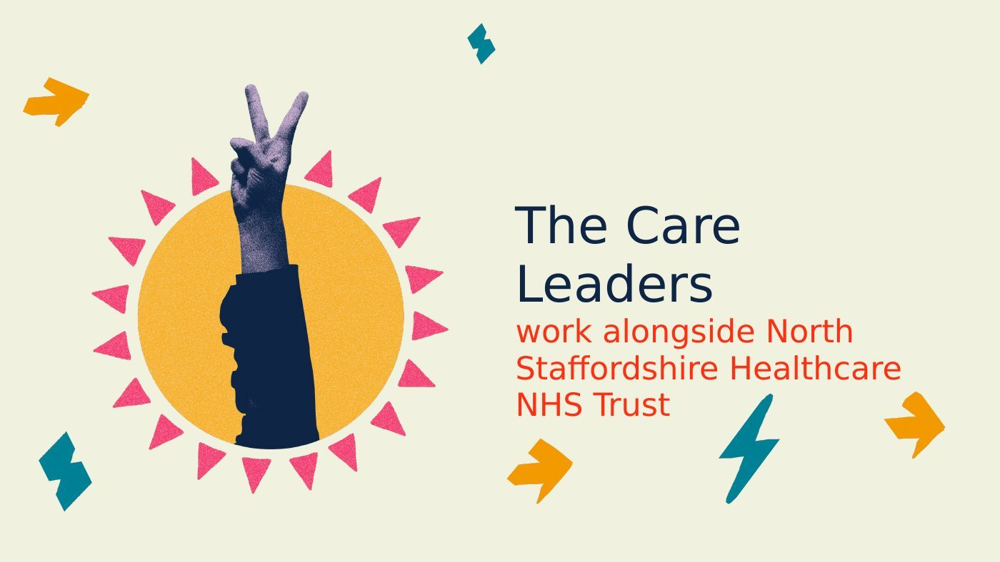
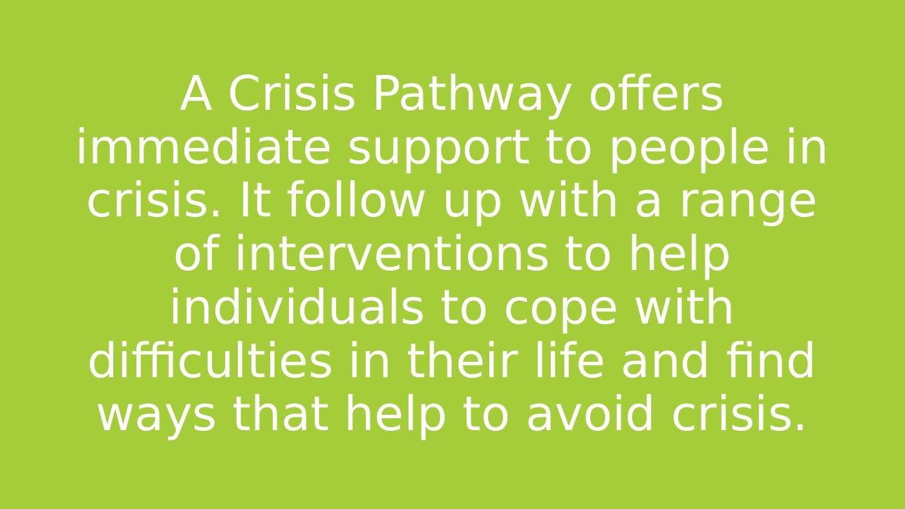
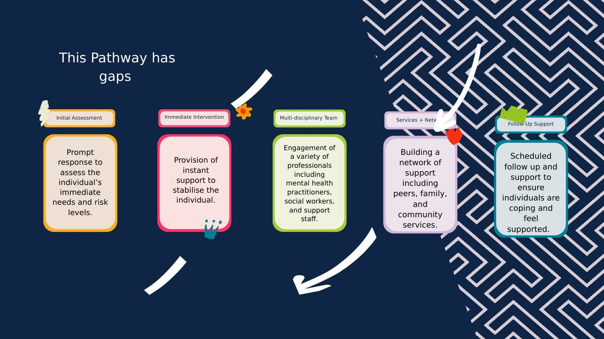
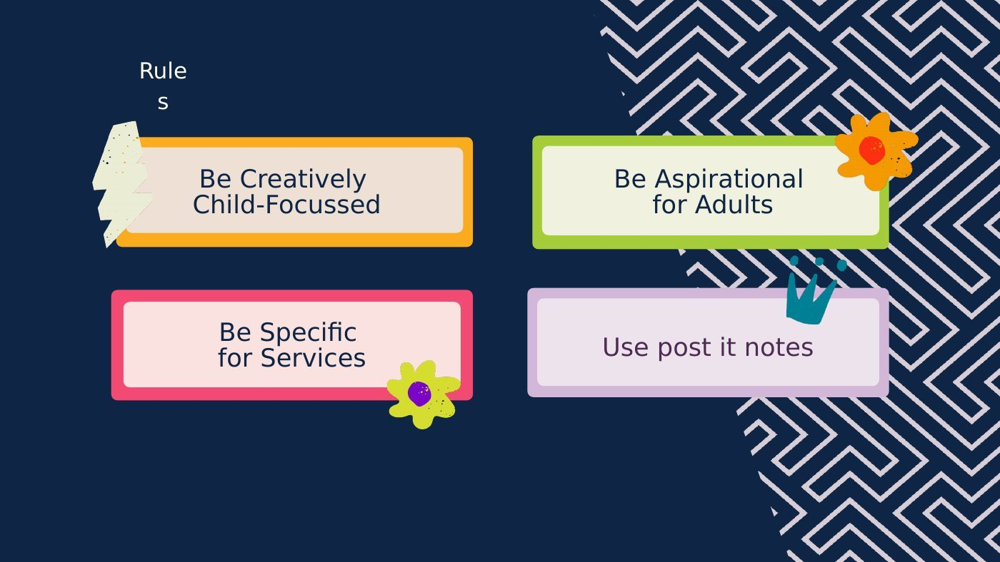
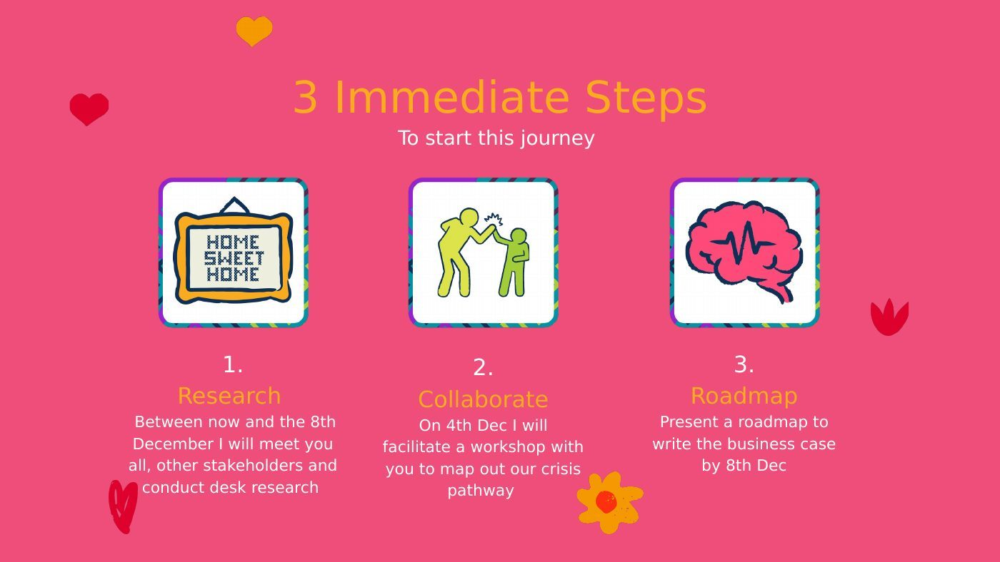
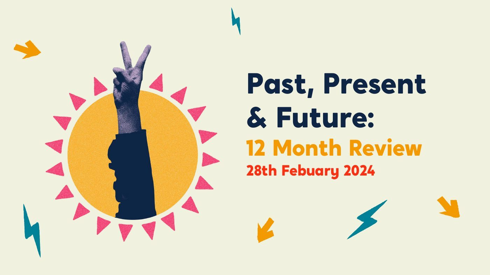
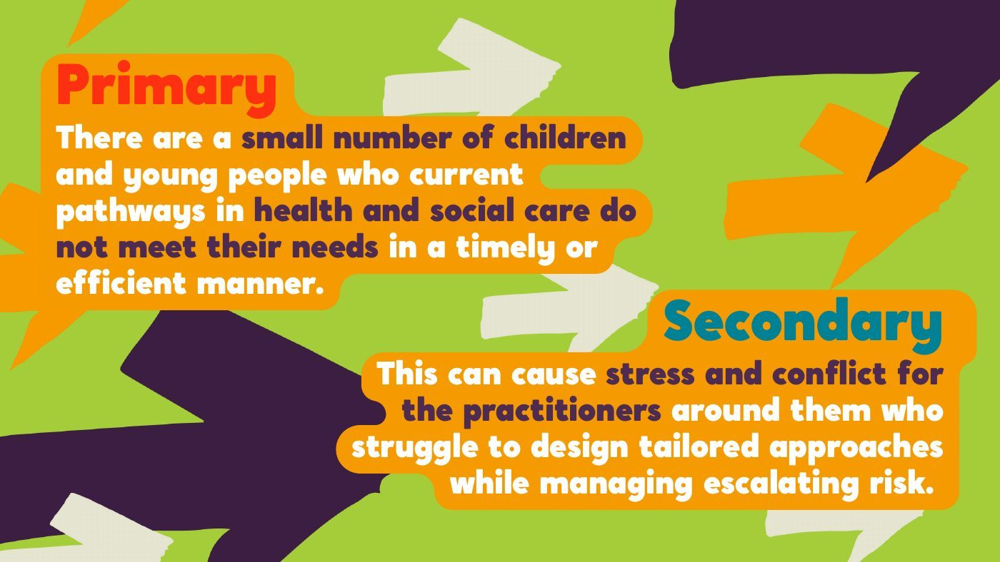
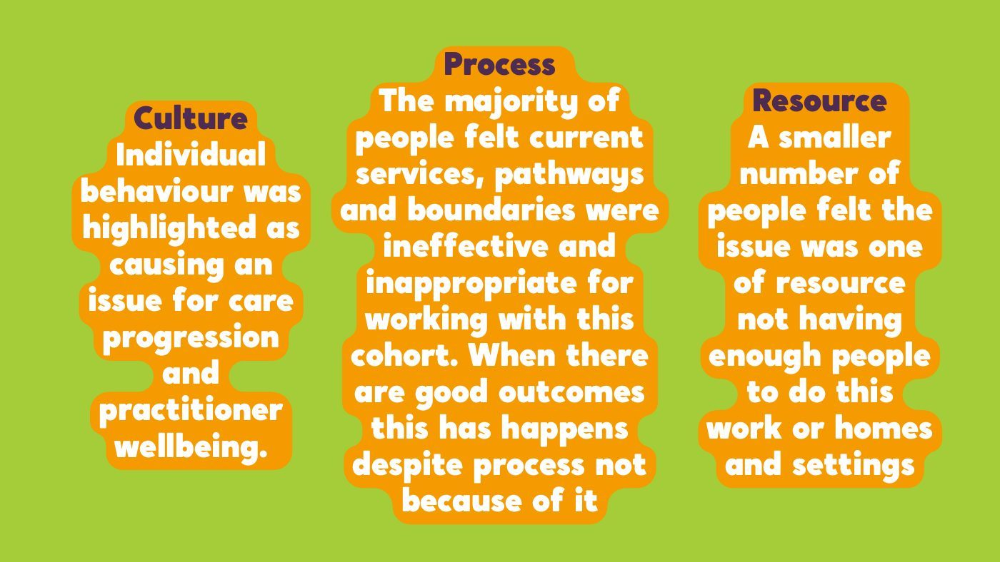
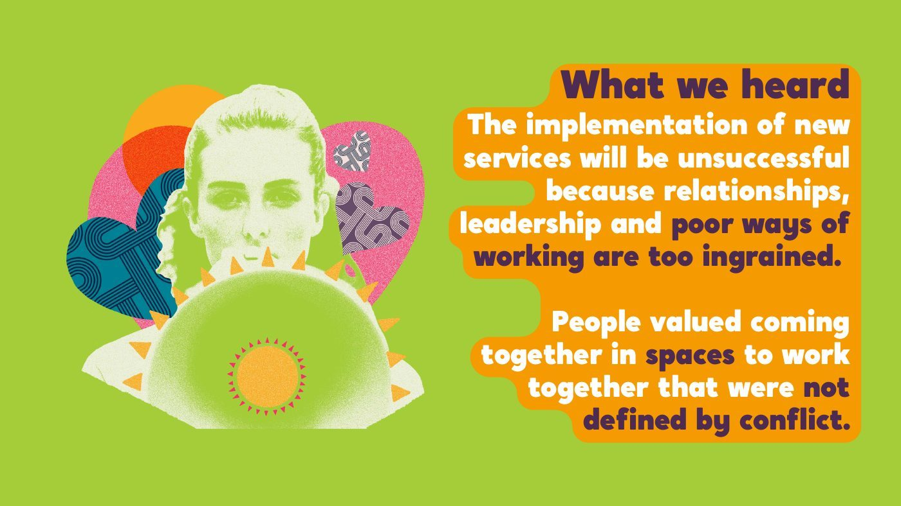
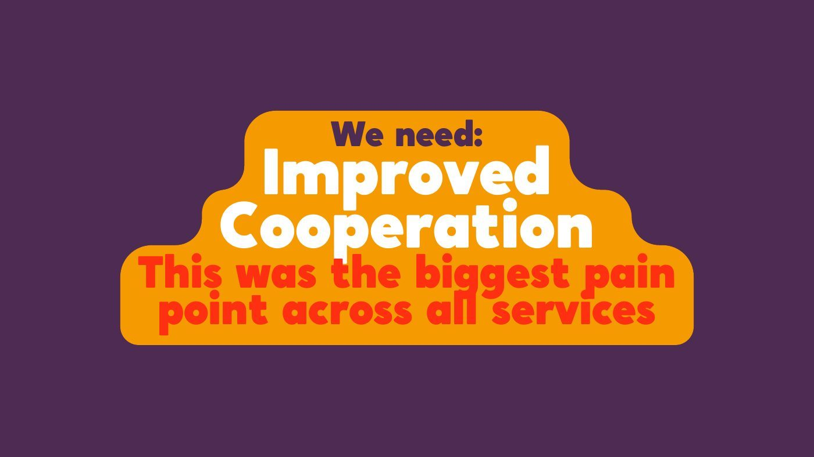
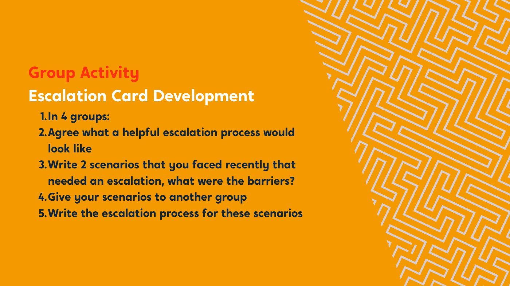
A pathway for children with behaviours of distress
- Entry Referrals from schools, health, social care or families, screened by a multi-agency intake team
- Assessment A restorative, relational assessment of what is driving the distress, and what has already been tried
- Support Three tiers, from signposting and consultation to direct support from the multidisciplinary team
- Exit Clear outcomes, a transition plan, and follow-ups at 3, 6 and 12 months
A multidisciplinary team around the child
- Support at home Intensive, trauma-informed help that could prevent a hospital admission
- Family support workers Practical help that gives parents capacity back
- Designated leads One in each organisation to coordinate
- Shared budget Managed together, with responsibilities agreed in advance
Four cross-sector sessions
More than 400 staff from health, social care and education, learning together.
- Emotion coaching Label, validate and empathise, then problem-solve
- Co-regulation The finger brain analogy, to explain regulation to children
- Distress, not disorder Scenarios that test how we read behaviour
- Knowing each other Time to learn what other services actually do
Training together
“The training helped me understand that children themselves aren’t complex, it’s the systems they’re placed in that create challenges.”
Training participant
What 119 people said
In their words
“I now feel more confident approaching behaviour with curiosity rather than judgment.”
“Getting to know the roles of other services has been invaluable.”
Training participants